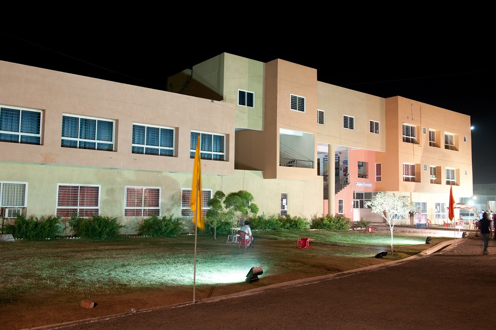
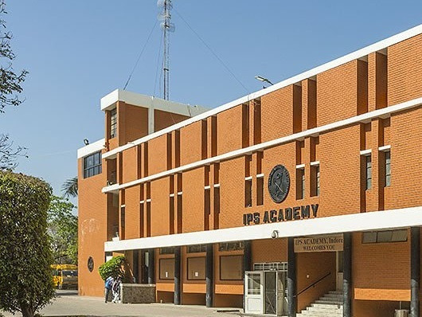

Acropolis Institute of Technology and Research is a private engineering college located in Indore,
Madhya Pradesh, India. It was established in 2005. Acropolis Institute of Technology and Research - AITR offers bachelor's and master's degrees in engineering and master's degrees in computing and management.

The Shri Govindram Seksaria Institute of Technology and Science (SGSITS), formerly Govindram Seksaria Technological Institute (GSTI) is a college funded by the state government of Madhya Pradesh and is located in Indore, India. It was established in 1952 as a technical institute offering licentiate and diploma courses in engineering.

Medi-Caps is a private university in the state of Madhya Pradesh in India, founded in 2000. The university offers engineering and management degrees.
Since its inception in July 2000, Medi-Caps has consistently aimed at creating an ideal ambiance for budding technocrats and managers; and helping them to grow like true professionals.

Shri Vaishnav Vidyapeeth Vishwavidyalaya is a private university established under Madhya Pradesh Niji Vishwavidyalaya (Sthapana Avam Sanchalan) Adhiniyam in 2015 at Indore MP(India).
Shri Vaishnav Institute of Technology and Science is approved by AICTE and Govt. of Madhya Pradesh and is affiliated Rajiv Gandhi Proudyogiki Vishwavidyalaya, Bhopal and Devi Ahilya Vishwavidyalaya, Indore for MBA. SVITS is imparting quality education to the students and thus shaping their future.

Devi Ahilya University (informally abbreviated DAVV), formerly Indore University, is a State University whose jurisdiction was initially restricted to Indore city. Later on, its jurisdiction was extended to seven tribal-dominated districts of Indore division namely, Jhabua, Alirajpur, Dhar, Khargone, Khandwa, Burhanpur and Barwani. It is thus catering to the educational needs of the most industrially developed district of Madhya Pradesh, Indore on one hand and to the seven tribal and rural backward districts of the State on the other.

Institute Of Engineering & Science IPS Academy Indore is an Autonomous engineering education institution under UGC guidelines, located at Indore city beside NH-3 in Madhya pradesh state, India.
It was established in Indore on 19 October 1999 after securing approval of the All India Council for Technical Education, New Delhi, and Government of Madhya Pradesh to commence in the 1999–2000 academic year. It ranks among the top 45 private engineering institutions in India.[1]